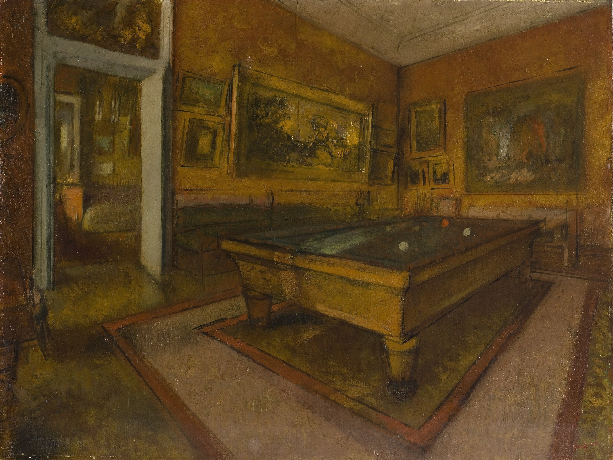

Илер-Жермен-Эдгар де Га (Эдгар Дега)
Salle de billard au Ménil-Hubert (Бильярдная в Мениль-Юбер), 1892

Холст, масло, 50,7 x 65,5 см
Музей д’Орсе, Париж.
С 1860-х годов Дега регулярно проводил лето в Нормандии, в Мениль-Юбере (департамент Орн), в загородном поместье своего друга детства Поля Вальпенсона. Там он писал портреты членов семьи, а также создавал пейзажи интерьеров, в том числе бильярдной. 27 августа 1892 года Дега написал своему другу, скульптору Бартоломе, что ему снова пришлось отложить своё возвращение в Париж, потому что он только что начал писать ещё одну картину: "Мне захотелось рисовать, и я решил попробовать бильярдные. Я думал, что немного разбираюсь в перспективе, но на самом деле я ничего о ней не знал и думал, что смогу заменить её с помощью перпендикуляров и горизонталей, усердно пытаясь вычислить углы в пространстве. Я действительно работал над этим". Эта картина из Музея Орсе является наброском к более законченной композиции, которая в настоящее время находится в Государственной галерее в Штутгарте. Эти работы являются редкими примерами творчества Дега как художника-интерьериста.
Происхождение
2-я продажа картин, пастелей и рисунков Эдгара Дега из его мастерской, Париж, Галерея Жоржа Пети, 11-13 декабря 1918 г. В коллекции Фике, приобретена за 8600 франков на распродаже 13 декабря 1918 г. Галерея Нуньес и Фике, Париж Коллекция Фридмана, Париж В 1989 г. принята государством в качестве подарка в качестве платы за право наследования для национальных музеев В 1989 г. передана музею Орсе, Париж
Источник: https://www.musee-orsay.fr/fr/oeuvres/salle-de-billard-au-menil-hubert-25611